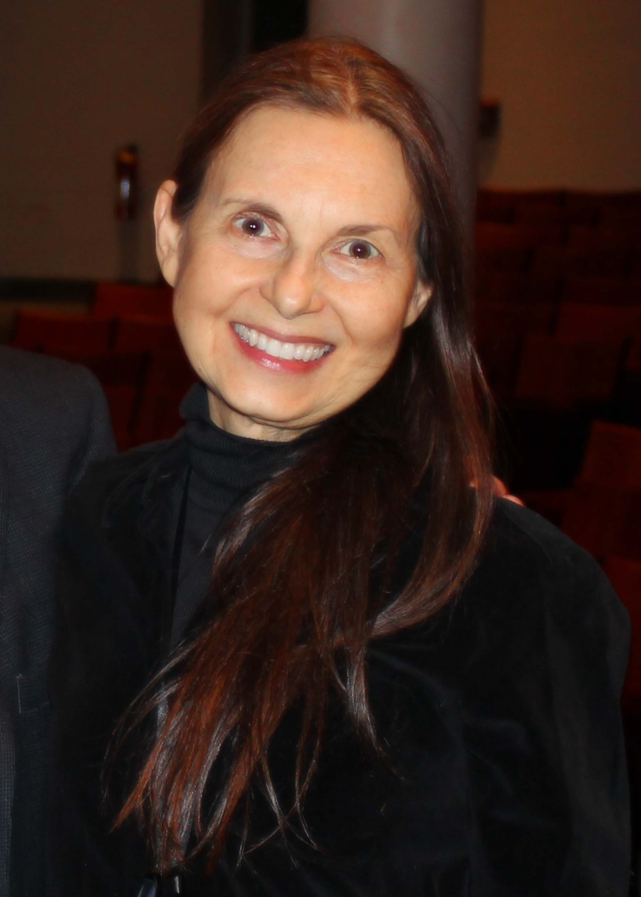
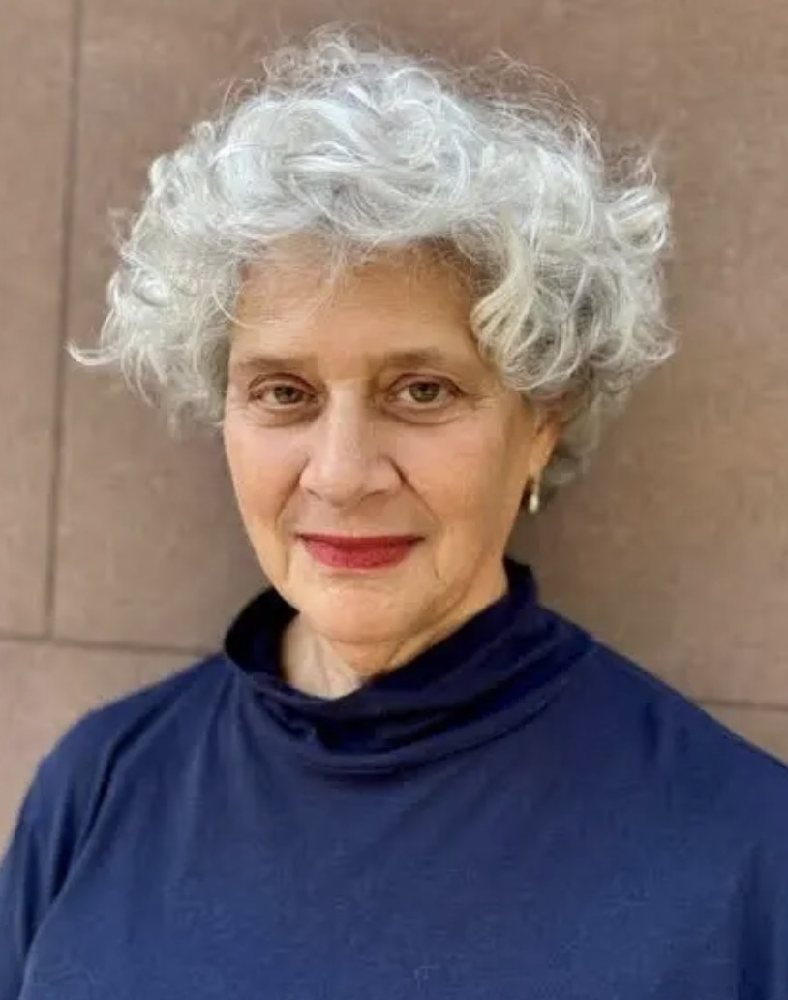

About Margaret
Born in Ohio and trained at the Yale School of Art, Margaret Morton (1948-2020) was a Professor of Art at Cooper Union for thirty years. She is best known for chronicling New York City’s unhoused communities for nearly two decades. Combining her elegant, perceptive photographs with transcribed interviews, she produced four books that bear witness and advocate for people without housing. In 2014, she published Cities of the Dead: The Ancestral Cemeteries of Kyrgyzstan. At her death, she was completing a book on Manhattan's Old Farley Post Office, which she photographed during its renovation as the Moynihan Train Hall.
About the Archive
In 1989, Margaret Morton and I met when I was Curator of Prints and Photographs at the Museum of the City of New York and she had begun to photograph the structures built by people living in Tompkins Square Park, across the street from her apartment. We became friends, and in 2002, she asked me to be the executor of her estate. She knew I believed in her work and that my curatorial experience would help me preserve it.
According to Margaret’s wishes, a trust has been set up for the care, preservation, publication, promotion, and display of her photography. In 2022, I established the Margaret Morton Archive to achieve these goals. As our team promotes Margaret’s life and work in exhibitions, publications and online programs, we are preparing work for donations to public collections.
—Bonnie Yochelson
Contact
Margaret Morton Archive
Mana Contemporary
Units 361 & 364
888 Newark Avenue
Jersey City, NJ 07306
You can reach us at this email. For requests to use images by Margaret Morton, please direct inquiries to Artists Rights Society.


Archive Staff
Bonnie Yochelson (she/her/hers) is an art historian and independent curator who has organized exhibitions and written books on photographers including Berenice Abbott, Alfred Stieglitz, and Jacob Riis. Her most recent book is Too Good to Get Married: The Life and Photographs of Miss Alice Austen (Fordham University Press, 2025).
Stephanie Neel (she/her/hers) is an archivist based in New York City, working primarily with photography and performing arts collections. She has been the archivist at Mark Morris Dance Group in Brooklyn since 2017. Stephanie is the current president of Archivists Round Table of Metropolitan New York, and serves on the Archives Funding Coalition for Dance/USA.
Justin Han (he/him/his) is an archivist and artist based in Brooklyn. He was previously an archivist with the Mark Morris Dance Group. He has been the recipient of residencies and fellowships from the Vermont Studio Center, The Here and There Collective, The Sharpe-Walentas Studio Program, and Asia Art Archive in America.
Alexandra Arredondo (she/her/hers) is currently a graduate student at Pratt Institute studying Library and Information Science alongside receiving a certificate in Archives. Her work centers around audiovisual collections, primarily focusing on migrant narratives which include oral history and documentary work.

Bonnie Yochelson
Executive Director

Stephanie Neel
Lead Archivist

Justin Han
Assistant Archivist